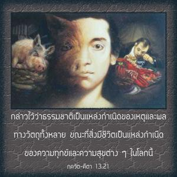
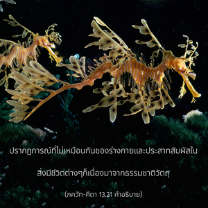
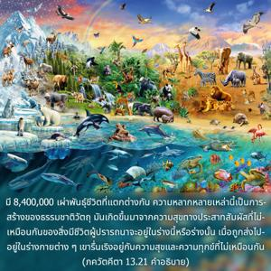
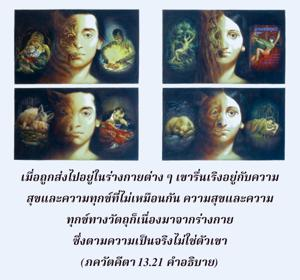
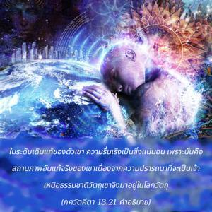
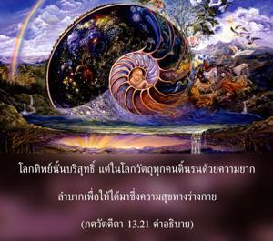

กล่าวไว้ว่าธรรมชาติเป็นแหล่งกำเนิดของเหตุและผลทางวัตถุทั้งหลาย ขณะที่สิ่งมีชีวิตเป็นแหล่งกำเนิดของความทุกข์และความสุขต่างๆ ในโลกนี้






ปรากฏการณ์ที่ไม่เหมือนกันของร่างกาย และประสาทสัมผัสในสิ่งมีชีวิตต่างๆ ก็เนื่องมาจากธรรมชาติวัตถุ มี 8,400,000 เผ่าพันธุ์ชีวิตที่แตกต่างกัน ความหลากหลายเหล่านี้เป็นการสร้างของธรรมชาติวัตถุ มันเกิดขึ้นมาจากความสุขทางประสาทสัมผัสที่ไม่เหมือนกันของสิ่งมีชีวิตผู้ปรารถนาจะอยู่ในร่างนี้หรือร่างนั้น เมื่อถูกส่งไปอยู่ในร่างกายต่างๆเขารื่นเริงอยู่กับความสุขและความทุกข์ที่ไม่เหมือนกัน ความสุข และความทุกข์ทางวัตถุ ก็เนื่องมาจากร่างกายซึ่งตามความเป็นจริงไม่ใช่ตัวเขา ในระดับเดิมแท้ของตัวเขาความรื่นเริงนั้นเป็นสิ่งแน่นอน เพราะนั่นคือสถานภาพอันแท้จริงของ เขาเนื่องจากความปรารถนาที่จะเป็นเจ้าเหนือธรรมชาติวัตถุ เขาจึงมาอยู่ในโลกวัตถุ ในโลกทิพย์ไม่มีสิ่งเหล่านี้ โลกทิพย์นั้นบริสุทธิ์แต่ในโลกวัตถุทุกคนดิ้นรนด้วยความยากลำบากเพื่อให้ได้มาซึ่งความสุขทางร่างกาย อาจทำให้ชัดเจนขึ้นที่กล่าวว่าร่างกายนี้คือผลของประสาทสัมผัสต่างๆ ประสาทสัมผัสเป็นเครื่องมือเพื่อสนองความต้องการบัดนี้ผลมวลรวมคือร่างกาย และประสาทสัมผัสที่เป็นเครื่องมือธรรมชาติวัตถุเป็นผู้ให้จะชัดเจนยิ่งขึ้นในโศลกต่อไป สิ่งมีชีวิตได้รับพรหรือถูกสาปในสถานการณ์ต่างๆตามความปรารถนาและตามกรรมในอดีตของตน ธรรมชาติวัตถุได้วางเขาลงในที่ต่างๆ ตามความต้องการและตามกรรมของเขา สิ่งมีชีวิตเองเป็นต้นเหตุที่ทำให้ได้สถานที่พำนักเช่นนี้ และได้รับความสุข หรือความทุกข์ซึ่งเป็นผลที่ตามมา เมื่อถูกจับให้มาอยู่ในร่างกายโดยเฉพาะนี้เขาได้มาอยู่ภายใต้การควบคุมของธรรมชาติ เพราะว่าร่างกายเป็นวัตถุซึ่งต้องปฏิบัติตามกฎแห่งธรรมชาติ ในขณะนั้นสิ่งมีชีวิตไม่มีอำนาจที่จะไปเปลี่ยนกฎเกณฑ์ สมมติว่าสิ่งมีชีวิตถูกจับให้ไปอยู่ในร่างสุนัข เขาต้องทำตัวให้เหมือนกับสุนัขทันที จะทำตัวเป็นอย่างอื่นไปไม่ได้ และหากว่าสิ่งมีชีวิตถูกจับให้ไปอยู่ในร่างสุกร เขาก็จะถูกบังคับให้กินอุจจาระและทำตัวเหมือนกับสุกร ในทำนองเดียวกัน หากสิ่งมีชีวิตถูกจับไปอยู่ในร่างเทวดา เขาจะต้องทำตัวตามสถานภาพทางร่างกายของเขา นี่คือกฎแห่งธรรมชาติ แต่ในทุกๆ กรณีอภิวิญญาณทรงอยู่กับปัจเจกวิญญาณ ได้อธิบายไว้ในคัมภีร์พระเวท (มุณฺฑก อุปนิษทฺ 3.1.1) ดังนี้ ทฺวา สุปรฺณา สยุชา สขายห์ องค์ภควานฺทรงมีพระเมตตาต่อสิ่งมีชีวิต จึงทรงอยู่ร่วมกับปัจเจกวิญญาณเสมอ และในทุกๆ สถานการณ์พระองค์ทรงปรากฏในฐานะอภิวิญญาณ หรือ ปรมาตฺมา